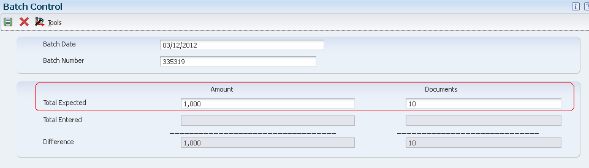
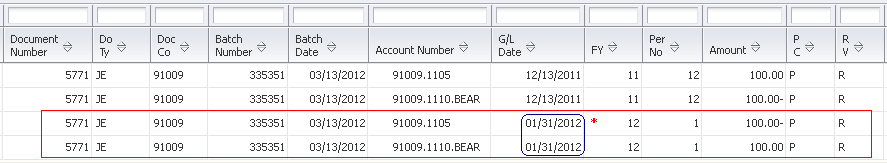

Constants provide a basic framework for how you want your EnterpriseOne General Accounting system to work. This information customizes the system for your business needs. For example, you can set up batch control so that when you enter journal entries, the system verifies the total amount of the batch after you enter it.
Constants establish system basics such as:
Whether the system verifies that the amount and number of documents in a batch of journal entries balance to the totals that you enter separately.
Whether you require management to approve batches of documents before posting.
Whether the system allows you to post batches to a prior accounting period within the current year.
How the system manages invalid account numbers on journal entries.
What date the system uses for reversing journal entries.
What symbols you use to identify the format of the account numbers that you enter during data entry.
Whether you use multiple currencies.
How the system processes journal entries that cross company boundaries (intercompany settlements).
Prerequisite Note: Use Application Security defined in Security Workbench (P00950) to secure this application from all users other than authorized users. For more information on Application Security, refer to Document 1367482.1.
Scope
This document is intended for the System Administrator and Finance Functional users who are responsible for configuring EnterpriseOne General Accounting Constants in the General Accounting system.
Details
Tables and Caching
Information about the General Accounting Constants is stored in the following tables:
General Constants (F0009)
Company Constants (F0010)
General Accounting Constants are cached information stored in both Database Caching and Service Cache. If you change settings for any of the constants, you must perform following steps in order for the changes to take effect:
On fat client, signing off and signing back in will help to reset the cache.
On web client, it will be required to explicitly reset the cache apart from signing off and signing back in.
NOTE: In some instances, clearing the cache as mentioned above has not helped since F0009 is a bootstrap table and is cached with each call object kernel on the Enterprise Server. In such cases, its advisable that the JDE services must be bounced for the Enterprise Server.
Setup Constants
You can access the General Accounting Constants application in following ways:
Fast Path:
Enter P0000 or 9K on fast path to open System Setup application.
Click on General Accounting Constants tab to open General Accounting Constants.
Menu:
Select General Accounting System Setup menu (G0941), General Accounting Constants application.
Click on General Accounting Constants tab to open General Accounting Constants.
NOTE: It is strongly recommended that you do not change following constants after they have been set up because the results of the change will be unpredictable:
Intercompany Settlements
Multi-Currency Conversion
Allow Multi-Currency Intercompany Transaction
Batch Control Required
When users create a batch of documents using an interactive application such as Journal Entries, they may want to verify the total number of documents and total currency amount for the batch. Batch Control allows users to verify the total amount expected against the total amount entered immediately after the batch is created.
If you select this check box, the system displays an additional form when you enter a batch. You enter the total number of documents and the total amount that you expect the batch to contain. If the user does not enter any data in the Batch Control form, the current date will default into the Batch Date field and the Batch Number value will default from Next Numbers. The Total Expected Amount and Total Expected Documents fields will remain blank or zero.

When you finish entering each batch and close the program, the system displays the difference, if any, between the totals that you expected to enter and the totals that you actually entered. The user can compare the values expected against the values entered and correct any discrepancies.
The fields on the Batch Control form are for informational purposes only. The values on the Batch Control form do not affect how the batch is processed.
NOTE: Setting up Batch Control Required option in General Accounting Constants will only enable the Batch Control form for G type batches. To setup for other batch types like IB, RB, V, etc., you could setup Batch Control Required option for Accounts Receivable and Accounts Payable modules using the respective Constants form.
Batch Control On Web Environments
Currently, Batch Control is not supported in thin or zero environments i.e. WTS, HTML or Java in Xe and ERP 8.0 releases though it works fine on fat clients in these releases. There are several Bugs related to enabling the functionality on web in Xe and ERP8.0. The Bugs are included in ESUs, but also require certain paper fixes (Special Instructions) to implement the functionality. This requires extensive changes to the associated programs/business functions and the administration of these changes are not supported by Oracle Software Support (OSS). Please contact OSS for more information on Special Instructions.
The Batch Control functionality for web has been implemented in 8.9 and subsequent releases.
Manager Approval of Input
The Manager Approval of Input constant enables you to specify whether management approval of batches is required before batches can be posted.
Select this check box if manager approval is required for batches. The system assigns a Pending status to the batch and a manager must approve it before it can be posted.
If you do not select this check box, the system assigns an Approved status to the batch and the batch does not require that a manager approve it before it can be posted.
If you specify that management must approve each batch of journal entries before it can be posted, you need to set up a list of Secured users and a list of Approved By users within Batch Approval and Post Security. You can restrict unauthorized users from viewing batches other than their own in the General Journal Review program. For more information, refer to Overview of Batch Approval and Post Security Setup (P00241/P0000).
Similarly you could setup Manager Approval of Batches for Accounts Receivable and Accounts Payable modules using the respective Constants form.
NOTE: You set up management approval for AR, AP, and GL modules and not for specific companies.
Allow PBCO Postings
There might be instances, especially during implementation, when you need to post batches to prior accounting periods. This constant controls whether the system allows posting to prior accounting periods.
If you do not set up this option and enter a prior period entry, the system generates an error message "Date Is in this Yr but Prior Mth (PBCO)".
If you allow posting to prior periods, the system generates a warning message to prevent accidental postings to a prior period.
If the constant is not set to allow prior period posting, another approach is to change the current period for the company to a prior period and then post to that period. In either case, you need to close the prior period again and process updated period-end financial reports for that period and subsequent periods.
Allow Invalid Accounts
This flag controls whether you allow journal entries to be entered with invalid account numbers. Invalid account numbers are account numbers that have not yet been set up in Account Master (F0901) for a business unit that already exists in the Business Unit Master table (F0006). The process of creating accounts by temporarily accepting invalid accounts allows you to create all or part of your chart of accounts for a business unit on an as needed basis. This process is also known as dynamic accounts creation.
If you select this check box, you can enter invalid account numbers if the number is preceded by the invalid account symbol, which is #.
If you allow an invalid account number, the system either:
Leaves the batch in an error status.
Creates a new account dynamically if you have set up the system to do so.
You must either change the number to a valid account number or set up a new account number before the batch will post.
The system verifies the account number against the Account Master table (F0901).
NOTE: Please note that 'Allow Invalid Accounts' functionality is not supported for transactions created via Procurement module.
Use End of Period Reversal Date
NOTE: This Constant setup is introduced as an enhancement Bug 10934571 and is only available in 9.0 and subsequent releases.
This option specifies whether to use the first or last day of the next fiscal period for the general ledger date for reversing journal entries. Reversing journal entries are used more often for periodic accruals.
Select the check box to specify the end of the next period.

*A reverse of journal entry with G/L Date 12/13/2011 has been created with G/L Date of last day of next period i..e 01/31/2012.
Clear the check box to specify the first day of the next period.
*A reverse of journal entry with G/L Date 03/13/2012 has been created with G/L Date of first day of next period i..e 04/01/2012.
After you post journal entries, the system creates and posts the reversing entries using the day specified in this constant.
Intercompany Settlements
If your organization has transactions between companies, the companies will be out of balance unless you create and post intercompany balancing entries. You create intercompany settlements to ensure that each company's net balance equals zero i.e. debits equal credits. You can either create these settlements yourself or have the system create them automatically.
Valid values that can be setup for Intercompany Settlements are as follows:
'1' Hub method
Create intercompany settlements using a hub company.
'2' Detail method
Create intercompany settlements without a hub company.
This method is also valid for multicurrency processing.
'3' Configured hub method
Create intercompany settlements using a configured hub.
This method is also valid for multicurrency processing.
'N' No intercompany transactions
Do not create intercompany settlements.
The system does not post a batch if it contains intercompany transactions.
'*' Manual intercompany settlements
Do not create intercompany settlements.
The system posts a batch but does not create balancing entries for the companies if it contains intercompany transactions.
You must manually create the balancing entries that show on the General Ledger Post Report (R09801).
NOTE for Multi-Currency:
Intercompany settlement methods '1', '*', and 'N' are not valid for EnterpriseOne Multicurrency Processing.
You must use either the '2' detail or '3' configured hub method for intercompany settlements.
An option that specifies whether to allow intercompany transactions between companies with different base currencies. Valid settings are as follows:
On - checkbox selected
Allow intercompany transactions between companies with different base currencies.
The post program creates adjusting entries for the intercompany accounts in the foreign currency of the transaction.
You must create intercompany settlements in either the detail '2' or configured hub '3' mode.
Off - checkbox deselected
Do not allow intercompany transactions between companies with different base currencies.
NOTE: Even if a company does not enter intercompany transactions, be aware that EnterpriseOne software was designed to allow multicurrency intercompany transactions and settlements. Regardless of whether you actually enter intercompany transactions, you must select the check box to allow multicurrency intercompany transactions and specify the intercompany settlement method '2' or '3' in the General Accounting Constants program. As long as you do not enter batches that contain transactions between companies, the system does not create intercompany transactions and settlements.
Multicurrency Conversion Constant (Y, N, Z)
A code that specifies whether to use multi-currency accounting. Valid values are:
'N' Do not use multi-currency accounting.
Use if you enter transactions in only one currency for all companies.
The multi-currency fields will not appear on forms.
The system supplies a default value of 'N' if you do not enter a value.
To activate EnterpriseOne Multicurrency Processing, you must set the constant in the Multicurrency Conversion field as follows depending on the default conversion method that you want to use:
'Y' Multiplier method
Use the multiplier rate to convert amounts from one currency to another.
The system multiplies the foreign amount by the exchange rate to calculate the domestic amount.
'Z' Divisor method
Use the divisor rate to convert amounts from one currency to another.
The system divides the foreign amount by the exchange rate to calculate the domestic amount.
When the multicurrency conversion constant is activated, the system displays currency fields on various entry and inquiry forms.You can override the default conversion method when you set up specific currency relationships.
NOTE: After you begin using EnterpriseOne Multicurrency Processing, do not change the multicurrency conversion constant or you will get unpredictable results, such as:
Accounts receivable and accounts payable gains and losses will be incorrect.
Voids and reversing entries will be incorrect.
Monetary account valuations will be incorrect.
Restated amounts will be affected.
You should place security on the General Accounting Constants program so that personnel do not inadvertently change the value in this field.
Account Symbols
When you enter an account number during data entry, you can use any of these formats:
Business unit.Object.Subsidiary
Short Account ID (8-digit system-assigned number)
Third account number
You specify the format that you are using by preceding the account number with a symbol that identifies the format. Normally, you do not specify an account symbol for the most commonly used format to allow for quicker data entry. You can also define the symbol that separates the different components of the business unit.object.subsidiary account format.
Symbol to Identify Short Number
Enter a code such as '*' or '/' that precedes the short account number (eight-digit code) during data entry.
When you leave this field blank, the system uses the default of '*' (asterisk).
If the short account number is the one that you typically use, leave this field blank.
If it is seldom used, enter a symbol to identify it to the system.
Symbol to Identify BU.Object.Sub
Enter a code such as '* 'or '/' that precedes the Business Unit.Object.Sub or the long account number during data entry.
When you leave this field blank, the system uses the default of blank.
The business unit.object.sub account number is most commonly used.
If it is the one that you typically use, leave this field blank.
If it is seldom used, enter a symbol to identify it to the system.
Symbol to Identify 3rd G/L Account #
Enter a code such as '*' or '/' that precedes the third, or unstructured, account number during data entry.
If you leave this field blank, the system uses the default of '/'.
If the third account number is the one that you typically use, leave this field blank.
If it is seldom used, enter a symbol to identify it to the system.
NOTE:
Only one of the three fields used for account symbols can be left as blank.
Use blank for the type of account number that you typically use.
The other two fields must be setup unique.
Be sure that no symbol such as period, comma, etc. is used for any other purpose in the system.
Account Separator Character
Enter a character that divides the business unit, object, subsidiary elements, and the flex account code elements of an account number on forms or reports.
You can use any special character as separator characters except:
'#' Invalid account prefix.
'\' Work order prefix.
Do not use alphabetic characters or numbers.
If you leave this field blank, the system uses the default of '.' (period).
Frequently Asked Questions
Question 1: After selecting "Allow PBCO Postings" or reopening the period, it still throws "Date Is in this Yr but Prior Mth (PBCO)" error. Why?
Answer 1: General Accounting Constants are cached information stored in both Database Caching and Service Cache. For full details on how to allow PBCO postings, refer to knowledge Overview of General Accounting Constants (P0000).
If you change settings for any of the constants, you must perform following steps in order for the changes to take effect:
On fat client, signing off and signing back in will help to reset the cache.
On web client, it will be required to explicitly reset the cache apart from signing off and signing back in.
Reset Database Cache:
Log into a FAT/HTML or WebDev client.
Fast Path to WSJ (Work with Submitted Jobs).
Select Form Exit --> Advanced to open Work with Servers application (P986116 | ZJDE0002).
Highlight your Enterprise Server and select Row Exit --> Reset Cache.
Select Database, then click OK. This will flush database caching.
Reset Service Cache:
Login to the Server Manager.
Find the JAS instance you're working with.
Under the Runtime Metrics, select JDBJ Database Caches.
Select JDBj Service Cache option from the list and click on Clear Cache to flush Service Cache.
NOTE: In some unique instances, clearing the cache as mentioned above has not helped since F0009 (General Accounting Constants) and F0010 (Company Constants) are bootstrap tables and cached with each call object kernel on the Enterprise Server. In such cases, its advisable that the JDE services must be bounced for the Enterprise Server.
9.1 Update 2
After 9.1 the JD Edwards EnterpriseOne announces a JDB Table Cache Refresh feature that removes the requirement of manually resetting or flushing Enterprise Server Database Cache, when certain tables are updated from programs, such as system constants, payment terms, and more, under Document 1595627.1.
Answer 2: The Batch Approval setup in General Accounting Constants applies to all companies, hence it is not possible to setup this by company. In order to modify the batch status from 'Pending' to 'Approve' for multiple batches, consider the following steps:
Search the batches with batch status as 'Pending' by User Id or Batch Date in Work with Batches (P0011) application.
Select all the batches that need to be approved.
Select Row Exit - Batch Approval.
Select the option - Approved - Batch is ready to post.
Select Form Exit - OK to All and click on ok.
All selected batches will have batch status change from 'Pending' to 'Approved'.